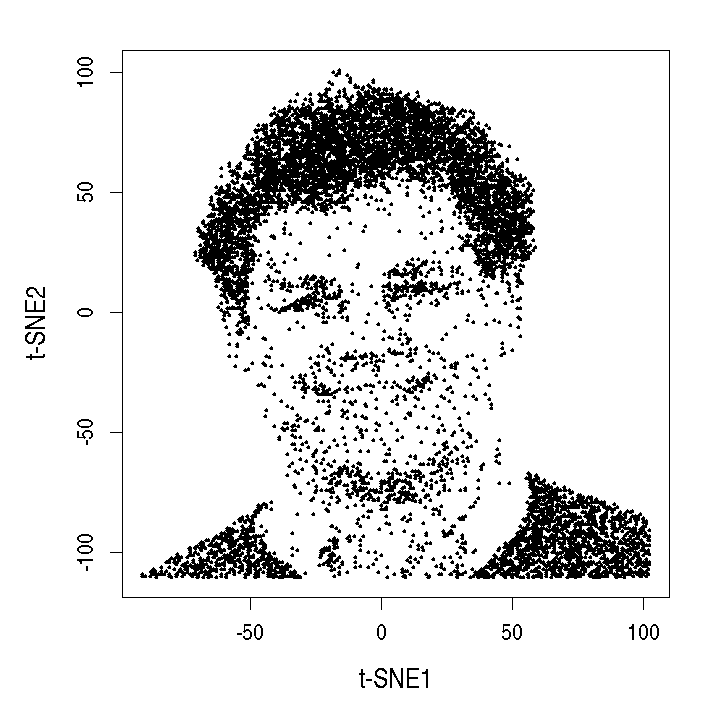

Introduction
The Marioni group is based at the Cancer Research UK Cambridge Institute and the EMBL European Bioinformatics Institute. We are involved in developing novel statistical and computational methods for analyzing single-cell RNA sequencing (scRNA-seq) data. This webpage serves as an index for our code repositories, including software packages and analysis scripts for various projects.
Software
- The scran package is designed for low-level analyses of scRNA-seq data. It provides methods for single-cell normalization (Lun et al., 2016), cell cycle phase identification (Scialdone et al., 2015) and detection of highly variable and significantly correlated genes. It is officially available as part of the open-source Bioconductor project (http://bioconductor.org/packages/scran), but the in-house experimental version can be obtained at https://github.com/MarioniLab/scran.
- The BASiCS package implements an integrated Bayesian hierarchical model to analyse scRNA-seq data by jointly performing normalization, quantification of technical variability and downstream analyses (Vallejos et al., 2015; Vallejos et al., 2016). It can detect highly or lowly variable genes within a population of cells, as well as differentially expressed or differentially variable genes between pre-specified populations of cells. BASiCS is currently available at https://github.com/catavallejos/BASiCS and will shortly be submitted to Bioconductor.
Projects
- Simulation code for the scRNA-seq normalization-by-pooling paper (Lun et al., 2016) can be obtained at https://github.com/MarioniLab/Deconvolution2016.
- The scRNA-seq low-level analysis workflow based on scran and other Bioconductor packages can be obtained at https://github.com/MarioniLab/BiocWorkflow2016.
- A tutorial about the usage of BASiCS for the detection of highly/lowly variable genes can be obtained at https://github.com/catavallejos/TutorialBASiCS.
Contact
This page is maintained by various members of the Marioni Lab. For information about code, contact Aaron Lun (aaron dot lun at cruk dot cam dot ac dot uk) or the authors of the individual repositories. For information about the group, contact John Marioni (marioni at ebi dot ac dot uk).

Links
- CRUK homepage: http://www.cruk.cam.ac.uk/research-groups/marioni-group
- EMBL-EBI homepage: http://www.ebi.ac.uk/research/marioni
- GitHub page: https://github.com/MarioniLab